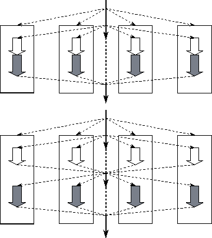

![[DBPP]](pictures//asm_color_tiny.gif)


![[Search]](pictures//search_motif.gif)
Example 5.5 showed how CC++ constructs can be used to implement parallel and concurrent composition. The basic ideas are straightforward: each component of a multicomponent program is implemented as a distinct task. Each such task is passed an array of proc_t objects representing its computational resources. The task creates a distinct set of processor objects and performs mapping and communication with respect to these proc_t objects and processor objects.
In this section, we discuss the techniques used to implement sequential composition in CC++ programs. Recall that in sequential composition, different program components execute in sequence on all processors (Section 4.2.2). These program components may themselves communicate and synchronize, but they cannot create new tasks. Hence, each process executes the same program, and the entire computation moves sequentially from one parallel operation to the next. This is the single program multiple data (SPMD) programming model discussed in Section 1.3.2.
A CC++ implementation of an SPMD program comprises two components. The initialization component creates the processor objects in which computation will be performed and the communication structures (such as channels) required by the program components called in the sequential composition. The execution component performs the actual computation, using the structures created during the initialization phase. The execution component can be structured in two different ways (Figure 5.7). In the first approach, the top-level program is structured as a sequence of calls to routines that each use a parfor statement to create a thread on each processor object. In the second approach a single parfor statement creates a set of long-lived threads (one per processor object) that each make a sequence of calls to the various routines involved in the sequential composition. The first approach can lead to simpler programs, but the latter tends to be more efficient.

Figure 5.7: Two alternative approaches to the implementation of sequential
composition in CC++
. The two figures are timelines, with the parent
thread shown as a solid dark line when active and a dashed dark line
when suspended. In both cases, an initialization phase creates the
four processor objects in which computation will occur. In the first
approach, a set of long-lived threads is then created; each of these
threads executes both components before terminating. In the second
approach, control returns to the parent thread after the first
component executes; the parent thread then creates a new set of
threads for the second component.
 . Finite Difference:
. Finite Difference:
We apply the two approaches to the SPMD finite difference computation used to illustrate sequential composition in Section 4.2.2. This computation is structured as a sequence of calls to a finite difference routine that performs nearest-neighbor communication and a reduction routine used to detect termination; the latter routine performs global communication.
An implementation of this algorithm using the first approach is illustrated in Program 5.13. The execution component is structured as a while loop containing a sequential composition of parallel finite_difference and global_maximum routines. Concurrency and communication are encapsulated in these routines, which use parfor and other parallel constructs to create threads of control within the processor objects created in the initialization phase.
The second approach is illustrated in Program 5.14. Here, a single parfor statement creates one thread of control in each processor object. This thread makes a sequence of calls to routines that call local finite_difference and global_maximum routines. The resulting program is more complex but potentially more efficient, as it avoids the cost of repeatedly creating and destroying the threads used to perform the SPMD computation.
© Copyright 1995 by Ian Foster